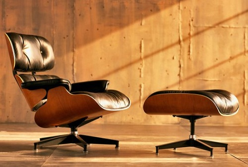

Tendencias del momento
Arquitectura moderna
La invención de las máquinas de producción masiva se produjo en un momento en que los ricos comerciantes y banqueros obtuvieron los derechos legales y políticos sobre la nobleza terrateniente. Producir una nueva clase empresarial. Los primeros vestigios en la historia del diseño como hoy lo conocemos comienzan a fines del siglo 19. La historia del diseño es indisociable de la revolución industrial.
En 1957 se inaugura el Salón del mueble de Milán. Los taburetes de Achille Castiglioni fueron la novedad. Los profesionales creativos y diseñadores italianos son apoyan la industria de muebles dinámicos. En 1963 los coches europeos comenzaron a penetrar en el mercado americano. Se pone a la moda la línea italiana: Ferrari, Maserati, producidos para vender masivamente pero por unidad. Se fabrican artesanalmente uno a uno. En la década de los ’60, el estilo permite a cada país definir una identidad nacional. En cuanto a coches, la línea italiana se caracterizó por la manufactura artesanal de sus partes, una forma simple aerodinámica con curvas sinuosas, líneas elegantes y limpias. En 1965 el arte contemporáneo, la publicidad y la arquitectura se suman al boom del diseño. Los diseñadores de moda franceses inventan ‘la moda’. Es el año del lanzamiento del arte contemporáneo y la publicidad. Yves Saint Laurent crea una ruptura entre otras casas de moda. En Francia se descubre la estética industrial. La profesión de diseñador industrial se convierte en una carrera. Roger Tallon inventa en 1957 la l’Ecole des Arts Appliqués de Paris, la primera escuela de diseño de Francia. En 1974 la belleza decorativa se dio a través del funcionalismo el lema fue: “Vender lo hermoso a precios feos”. El arte puro en lo cotidiano, el acercamiento entre las obras y los objetos, así como la colaboración entre artistas y diseñadores industriales. El posmodernismo surge a partir de 1978, como una crítica al funcionalismo. El diseño se atrevía a adornos barrocos y colores brillantes. Bajo la dirección de Alessandro Mendini, surje un discurso sobre el objeto banal y el rediseño. La personalización de los objetos se hace masivo, una de las principales diferencias con el funcionalismo. En 1981 emergen en Italia movimientos contestarios de todo tipo: antidiseño, antifuncionalismo, nuevo diseño, entre otros. Objetos y muebles de formas simples con una policromía audaz.

El diseño es una disciplina con bastante historia, pero los que trabajamos en ella sabemos que para hacer bien nuestro trabajo no podemos quedarnos en el pasado. Ser diseñador implica también una tarea de auto-formación constante, saber todo lo que se mueve diariamente en este mundillo, y aprender al menos una cosa nueva cada día. Para ayudarnos con esta tarea existen miles de blogs dedicados a recopilar las novedades del mundo del diseño, otros nos ofrecen tutoriales para nuestra formación o recursos gratuitos que nos serán de gran ayuda en nuestro trabajo. Como os digo el número de blogs de diseño que existen es inmenso y tratar de hacer una selección definitiva de los mejores sería pretencioso..
Referencias, créditos & citaciones APA: www.arkiplus.com. Portal especializado en temas de arquitectura, construcción, paisajismo y arte con más de 2300 artículos publicados a la fecha. Título del artículo: “Historia del Diseño”. Fecha de publicación: . Autoría del artículo: Equipo de redactores de Arkiplus.com. Consultado el 12/08/2021, desde la url: https://www.arkiplus.com/historia-del-diseno/.